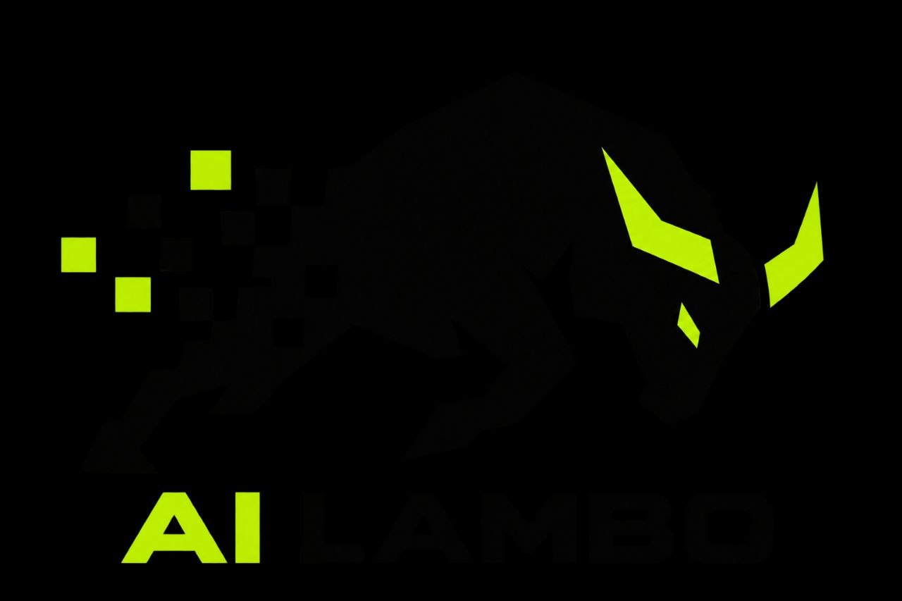

LiveMarketplace · 2026
AI Lambo
A 3D sponsorship marketplace for a Lamborghini build, with selectable placements, bidder qualification, receipts, and an agent-readable catalog. Interest is nonbinding until a separate agreement is signed.